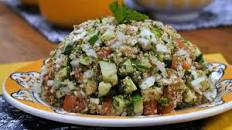

Entradas
Salada Tabule

Ingredientes
- 45 g de trigo para kibe
- 200 g de tomate picado sem sementes
- 1 cebola picada
- 2 pepinos picados
- 1 maço de salsinha picada
- 3 colheres (sopa) de suco de limão
- 2 colheres (sopa) de azeite
- sal a gosto
- pimenta-do-reino a gosto
- pimenta-do-reino
- 1/4 colher (chá) de noz-moscada
- hortelã picada
- salsa picada
Modo de preparo
Modo de preparo : 8h
- Em um recipiente, deixe o trigo de molho por 2 horas.
- Lave bem o trigo em água corrente, escorra e esprema nas mão para retirar o excesso de umidade.
- Passe a cebola picada em água fria e escorra bem.
- Junte os outros ingredientes (menos o tomate) e deixe tampado na geladeira por pelo menos 8 horas.
- Acrescente os tomates na hora de servir.
Salpicão

Ingredientes
- 500 g de peito de frango cozido e desfiado
- 2 cenouras grandes raladas
- 1 lata de ervilha
- 1 lata de milho verde
- 200 g de uva passa
- 1 maçã
- maionese a gosto
- cheiro-verde a gosto
- batata palha a gosto
Modo de preparo
Modo de preparo : 20min
- Misture todos os ingredientes, menos a batata palha.
- Depois de tudo misturado, forre com a batata palha.
- Depois e só servir.